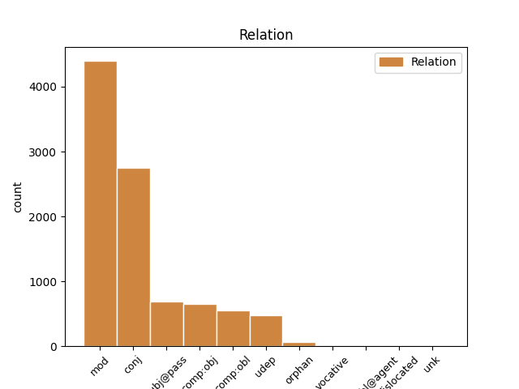
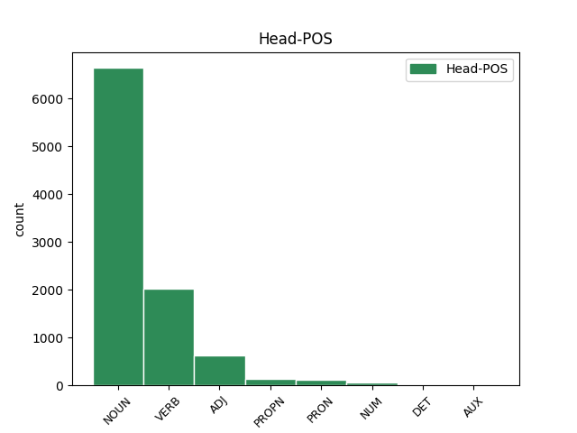
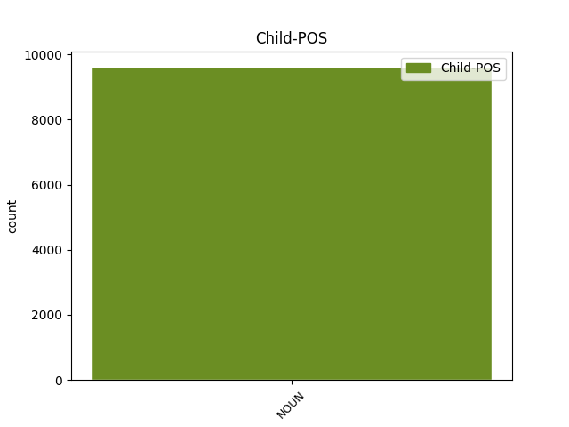

Distribution of features within this leaf



Agreement Rules sorted by frequency.
- When the dependent token is the modifer(mod) of the head token, and the dependent token is NOUN.
1 Obiurgationes _ _ _ _ 0 _ _ _
2 etiam _ _ _ _ 0 _ _ _
3 non _ _ _ _ 0 _ _ _
4 numquam _ _ _ _ 0 _ _ _
5 incidunt _ _ _ _ 0 _ _ _
6 necessariae _ _ _ _ 0 _ _ _
7 in _ _ _ _ 0 _ _ _
8 quibus _ _ _ _ 0 _ _ _
9 utendum _ _ _ _ 0 _ _ _
10 est _ _ _ _ 0 _ _ _
11 fortasse _ _ _ _ 0 _ _ _
12 et _ _ _ _ 0 _ _ _
13 vocis vox NOUN Nb Case=Gen|Gender=Fem|Number=Sing 14 mod _ ref=1.136
14 contentione contentio NOUN Nb Case=Abl|Gender=Fem|Number=Sing 0 _ _ _
15 maiore _ _ _ _ 0 _ _ _
16 et _ _ _ _ 0 _ _ _
17 verborum _ _ _ _ 0 _ _ _
18 gravitate _ _ _ _ 0 _ _ _
19 acriore _ _ _ _ 0 _ _ _
20 id _ _ _ _ 0 _ _ _
21 agendum _ _ _ _ 0 _ _ _
22 etiam _ _ _ _ 0 _ _ _
23 ut _ _ _ _ 0 _ _ _
24 ea _ _ _ _ 0 _ _ _
25 facere _ _ _ _ 0 _ _ _
26 videamur _ _ _ _ 0 _ _ _
27 irati _ _ _ _ 0 _ _ _
1 Obiurgationes _ _ _ _ 0 _ _ _
2 etiam _ _ _ _ 0 _ _ _
3 non _ _ _ _ 0 _ _ _
4 numquam _ _ _ _ 0 _ _ _
5 incidunt _ _ _ _ 0 _ _ _
6 necessariae _ _ _ _ 0 _ _ _
7 in _ _ _ _ 0 _ _ _
8 quibus _ _ _ _ 0 _ _ _
9 utendum _ _ _ _ 0 _ _ _
10 est _ _ _ _ 0 _ _ _
11 fortasse _ _ _ _ 0 _ _ _
12 et _ _ _ _ 0 _ _ _
13 vocis _ _ _ _ 0 _ _ _
14 contentione contentio NOUN Nb Case=Abl|Gender=Fem|Number=Sing 0 _ _ _
15 maiore _ _ _ _ 0 _ _ _
16 et _ _ _ _ 0 _ _ _
17 verborum _ _ _ _ 0 _ _ _
18 gravitate gravitas NOUN Nb Case=Abl|Gender=Fem|Number=Sing 14 conj _ ref=1.136
19 acriore _ _ _ _ 0 _ _ _
20 id _ _ _ _ 0 _ _ _
21 agendum _ _ _ _ 0 _ _ _
22 etiam _ _ _ _ 0 _ _ _
23 ut _ _ _ _ 0 _ _ _
24 ea _ _ _ _ 0 _ _ _
25 facere _ _ _ _ 0 _ _ _
26 videamur _ _ _ _ 0 _ _ _
27 irati _ _ _ _ 0 _ _ _
1 quibus _ _ _ _ 0 _ _ _
2 ille _ _ _ _ 0 _ _ _
3 respondit _ _ _ _ 0 _ _ _
4 Lacedaemonios _ _ _ _ 0 _ _ _
5 classe classis NOUN Nb Case=Abl|Gender=Fem|Number=Sing 7 subj@pass _ ref=1.84
6 illa _ _ _ _ 0 _ _ _
7 amissa amitto VERB V- Aspect=Perf|Case=Abl|Gender=Fem|Number=Sing|Tense=Past|VerbForm=Part|Voice=Pass 0 _ _ _
8 aliam _ _ _ _ 0 _ _ _
9 parare _ _ _ _ 0 _ _ _
10 posse _ _ _ _ 0 _ _ _
11 se _ _ _ _ 0 _ _ _
12 fugere _ _ _ _ 0 _ _ _
13 sine _ _ _ _ 0 _ _ _
14 suo _ _ _ _ 0 _ _ _
15 dedecore _ _ _ _ 0 _ _ _
16 non _ _ _ _ 0 _ _ _
17 posse _ _ _ _ 0 _ _ _
1 Ex _ _ _ _ 0 _ _ _
2 quo _ _ _ _ 0 _ _ _
3 intellegitur _ _ _ _ 0 _ _ _
4 corporis _ _ _ _ 0 _ _ _
5 voluptatem _ _ _ _ 0 _ _ _
6 non _ _ _ _ 0 _ _ _
7 satis _ _ _ _ 0 _ _ _
8 esse _ _ _ _ 0 _ _ _
9 dignam dignus ADJ A- Case=Acc|Degree=Pos|Gender=Fem|Number=Sing 0 _ _ _
10 hominis _ _ _ _ 0 _ _ _
11 praestantia praestantia NOUN Nb Case=Abl|Gender=Fem|Number=Sing 9 comp:obl _ ref=1.106
12 eam _ _ _ _ 0 _ _ _
13 que _ _ _ _ 0 _ _ _
14 contemni _ _ _ _ 0 _ _ _
15 et _ _ _ _ 0 _ _ _
16 reici _ _ _ _ 0 _ _ _
17 oportere _ _ _ _ 0 _ _ _
1 Mihi _ _ _ _ 0 _ _ _
2 quidem _ _ _ _ 0 _ _ _
3 certe _ _ _ _ 0 _ _ _
4 vir _ _ _ _ 0 _ _ _
5 abundans _ _ _ _ 0 _ _ _
6 bellicis _ _ _ _ 0 _ _ _
7 laudibus _ _ _ _ 0 _ _ _
8 Gnaeus _ _ _ _ 0 _ _ _
9 Pompeius _ _ _ _ 0 _ _ _
10 multis _ _ _ _ 0 _ _ _
11 audientibus _ _ _ _ 0 _ _ _
12 hoc _ _ _ _ 0 _ _ _
13 tribuit _ _ _ _ 0 _ _ _
14 ut _ _ _ _ 0 _ _ _
15 diceret _ _ _ _ 0 _ _ _
16 frustra _ _ _ _ 0 _ _ _
17 se _ _ _ _ 0 _ _ _
18 triumphum triumphus NOUN Nb Case=Acc|Gender=Masc|Number=Sing 20 comp:obj _ ref=1.78
19 tertium _ _ _ _ 0 _ _ _
20 deportaturum deporto VERB V- Case=Acc|Gender=Masc|Number=Sing|Tense=Fut|VerbForm=Part|Voice=Act 0 _ _ _
21 fuisse _ _ _ _ 0 _ _ _
22 nisi _ _ _ _ 0 _ _ _
23 meo _ _ _ _ 0 _ _ _
24 in _ _ _ _ 0 _ _ _
25 rem _ _ _ _ 0 _ _ _
26 publicam _ _ _ _ 0 _ _ _
27 beneficio _ _ _ _ 0 _ _ _
28 ubi _ _ _ _ 0 _ _ _
29 triumpharet _ _ _ _ 0 _ _ _
30 esset _ _ _ _ 0 _ _ _
31 habiturus _ _ _ _ 0 _ _ _
1 Itaque _ _ _ _ 0 _ _ _
2 eorum _ _ _ _ 0 _ _ _
3 consilio consilium NOUN Nb Case=Abl|Gender=Neut|Number=Sing 7 udep _ ref=1.79
4 saepe _ _ _ _ 0 _ _ _
5 aut _ _ _ _ 0 _ _ _
6 non _ _ _ _ 0 _ _ _
7 suscepta suscipio VERB V- Aspect=Perf|Case=Nom|Gender=Neut|Number=Plur|Tense=Past|VerbForm=Part|Voice=Pass 0 _ _ _
8 aut _ _ _ _ 0 _ _ _
9 confecta _ _ _ _ 0 _ _ _
10 bella _ _ _ _ 0 _ _ _
11 sunt _ _ _ _ 0 _ _ _
12 non _ _ _ _ 0 _ _ _
13 numquam _ _ _ _ 0 _ _ _
14 etiam _ _ _ _ 0 _ _ _
15 illata _ _ _ _ 0 _ _ _
16 ut _ _ _ _ 0 _ _ _
17 Marci _ _ _ _ 0 _ _ _
18 Catonis _ _ _ _ 0 _ _ _
19 bellum _ _ _ _ 0 _ _ _
20 tertium _ _ _ _ 0 _ _ _
21 Punicum _ _ _ _ 0 _ _ _
22 in _ _ _ _ 0 _ _ _
23 quo _ _ _ _ 0 _ _ _
24 etiam _ _ _ _ 0 _ _ _
25 mortui _ _ _ _ 0 _ _ _
26 valuit _ _ _ _ 0 _ _ _
27 auctoritas _ _ _ _ 0 _ _ _
1 ita _ _ _ _ 0 _ _ _
2 se _ _ _ _ 0 _ _ _
3 omni _ _ _ _ 0 _ _ _
4 tempore _ _ _ _ 0 _ _ _
5 de _ _ _ _ 0 _ _ _
6 populo _ _ _ _ 0 _ _ _
7 Romano _ _ _ _ 0 _ _ _
8 meritos _ _ _ _ 0 _ _ _
9 esse _ _ _ _ 0 _ _ _
10 ut _ _ _ _ 0 _ _ _
11 paene _ _ _ _ 0 _ _ _
12 in _ _ _ _ 0 _ _ _
13 conspectu _ _ _ _ 0 _ _ _
14 exercitus _ _ _ _ 0 _ _ _
15 nostri _ _ _ _ 0 _ _ _
16 agri ager NOUN Nb Case=Nom|Gender=Masc|Number=Plur 0 _ _ _
17 vastari _ _ _ _ 0 _ _ _
18 liberi liberi NOUN Nb Case=Nom|Gender=Masc|Number=Plur 16 orphan _ ref=1.11.3
19 in _ _ _ _ 0 _ _ _
20 servitutem _ _ _ _ 0 _ _ _
21 abduci _ _ _ _ 0 _ _ _
22 oppida _ _ _ _ 0 _ _ _
23 expugnari _ _ _ _ 0 _ _ _
24 non _ _ _ _ 0 _ _ _
25 debuerint _ _ _ _ 0 _ _ _
1 et _ _ _ _ 0 _ _ _
2 suscipiebat _ _ _ _ 0 _ _ _
3 omnes _ _ _ _ 0 _ _ _
4 qui _ _ _ _ 0 _ _ _
5 ingrediebantur _ _ _ _ 0 _ _ _
6 ad _ _ _ _ 0 _ _ _
7 eum _ _ _ _ 0 _ _ _
8 praedicans _ _ _ _ 0 _ _ _
9 regnum _ _ _ _ 0 _ _ _
10 Dei _ _ _ _ 0 _ _ _
11 et _ _ _ _ 0 _ _ _
12 docens doceo VERB V- Case=Nom|Gender=Masc|Number=Sing|Tense=Pres|VerbForm=Part|Voice=Act 0 _ _ _
13 quae _ _ _ _ 0 _ _ _
14 sunt _ _ _ _ 0 _ _ _
15 de _ _ _ _ 0 _ _ _
16 Domino dominus NOUN Nb Case=Abl|Gender=Masc|Number=Sing 12 dislocated _ ref=ACTS_28.31
17 Iesu _ _ _ _ 0 _ _ _
18 Christo _ _ _ _ 0 _ _ _
19 cum _ _ _ _ 0 _ _ _
20 omni _ _ _ _ 0 _ _ _
21 fiducia _ _ _ _ 0 _ _ _
22 sine _ _ _ _ 0 _ _ _
23 prohibitione _ _ _ _ 0 _ _ _
1 Auli _ _ _ _ 0 _ _ _
2 autem _ _ _ _ 0 _ _ _
3 filius _ _ _ _ 0 _ _ _
4 o _ _ _ _ 0 _ _ _
5 di deus NOUN Nb Case=Voc|Gender=Masc|Number=Plur 12 vocative _ ref=1.18.5
6 immortales _ _ _ _ 0 _ _ _
7 quam _ _ _ _ 0 _ _ _
8 ignavus _ _ _ _ 0 _ _ _
9 ac _ _ _ _ 0 _ _ _
10 sine _ _ _ _ 0 _ _ _
11 animo _ _ _ _ 0 _ _ _
12 miles miles NOUN Nb Case=Nom|Gender=Masc|Number=Sing 0 _ _ _
1 armatis _ _ _ _ 0 _ _ _
2 hominibus homo NOUN Nb Case=Abl|Gender=Masc|Number=Plur 8 comp:obl@agent _ ref=4.3.2
3 ante _ _ _ _ 0 _ _ _
4 diem _ _ _ _ 0 _ _ _
5 tertium _ _ _ _ 0 _ _ _
6 Nonas _ _ _ _ 0 _ _ _
7 Novembris _ _ _ _ 0 _ _ _
8 expulsi expello VERB V- Aspect=Perf|Case=Nom|Gender=Masc|Number=Plur|Tense=Past|VerbForm=Part|Voice=Pass 0 _ _ _
9 sunt _ _ _ _ 0 _ _ _
10 fabri _ _ _ _ 0 _ _ _
11 de _ _ _ _ 0 _ _ _
12 area _ _ _ _ 0 _ _ _
13 nostra _ _ _ _ 0 _ _ _
1 oboedistis _ _ _ _ 0 _ _ _
2 autem _ _ _ _ 0 _ _ _
3 ex _ _ _ _ 0 _ _ _
4 corde _ _ _ _ 0 _ _ _
5 in _ _ _ _ 0 _ _ _
6 eam _ _ _ _ 0 _ _ _
7 formam forma NOUN Nb Case=Acc|Gender=Fem|Number=Sing 0 _ _ _
8 doctrinae doctrina NOUN Nb Case=Gen|Gender=Fem|Number=Sing 7 unk _ ref=ROM_6.17
9 in _ _ _ _ 0 _ _ _
10 qua _ _ _ _ 0 _ _ _
11 traditi _ _ _ _ 0 _ _ _
12 estis _ _ _ _ 0 _ _ _
Disagree Examples:
1 liber liber NOUN Nb Case=Nom|Gender=Masc|Number=Sing 0 _ _ _
2 generationis generatio NOUN Nb Case=Gen|Gender=Fem|Number=Sing 1 mod _ ref=MATT_1.1
3 Iesu _ _ _ _ 0 _ _ _
4 Christi _ _ _ _ 0 _ _ _
5 filii _ _ _ _ 0 _ _ _
6 David _ _ _ _ 0 _ _ _
7 filii _ _ _ _ 0 _ _ _
8 Abraham _ _ _ _ 0 _ _ _
1 tunc _ _ _ _ 0 _ _ _
2 Herodes _ _ _ _ 0 _ _ _
3 clam _ _ _ _ 0 _ _ _
4 vocatis _ _ _ _ 0 _ _ _
5 magis _ _ _ _ 0 _ _ _
6 diligenter _ _ _ _ 0 _ _ _
7 didicit _ _ _ _ 0 _ _ _
8 ab _ _ _ _ 0 _ _ _
9 eis _ _ _ _ 0 _ _ _
10 tempus tempus NOUN Nb Case=Acc|Gender=Neut|Number=Sing 0 _ _ _
11 stellae stella NOUN Nb Case=Gen|Gender=Fem|Number=Sing 10 mod _ ref=MATT_2.7
12 quae _ _ _ _ 0 _ _ _
13 apparuit _ _ _ _ 0 _ _ _
14 eis _ _ _ _ 0 _ _ _
1 videntes video VERB V- Case=Nom|Gender=Masc|Number=Plur|Tense=Pres|VerbForm=Part|Voice=Act 0 _ _ _
2 autem _ _ _ _ 0 _ _ _
3 stellam stella NOUN Nb Case=Acc|Gender=Fem|Number=Sing 1 comp:obj _ ref=MATT_2.10
4 gavisi _ _ _ _ 0 _ _ _
5 sunt _ _ _ _ 0 _ _ _
6 gaudio _ _ _ _ 0 _ _ _
7 magno _ _ _ _ 0 _ _ _
8 valde _ _ _ _ 0 _ _ _
1 et _ _ _ _ 0 _ _ _
2 intrantes intro VERB V- Case=Nom|Gender=Masc|Number=Plur|Tense=Pres|VerbForm=Part|Voice=Act 0 _ _ _
3 domum domus NOUN Nb Case=Acc|Gender=Fem|Number=Sing 2 comp:obl _ ref=MATT_2.11
4 invenerunt _ _ _ _ 0 _ _ _
5 puerum _ _ _ _ 0 _ _ _
6 cum _ _ _ _ 0 _ _ _
7 Maria _ _ _ _ 0 _ _ _
8 matre _ _ _ _ 0 _ _ _
9 eius _ _ _ _ 0 _ _ _
10 et _ _ _ _ 0 _ _ _
11 procidentes _ _ _ _ 0 _ _ _
12 adoraverunt _ _ _ _ 0 _ _ _
13 eum _ _ _ _ 0 _ _ _
1 et _ _ _ _ 0 _ _ _
2 apertis _ _ _ _ 0 _ _ _
3 thesauris _ _ _ _ 0 _ _ _
4 suis _ _ _ _ 0 _ _ _
5 obtulerunt _ _ _ _ 0 _ _ _
6 ei _ _ _ _ 0 _ _ _
7 munera _ _ _ _ 0 _ _ _
8 aurum _ _ _ _ 0 _ _ _
9 tus tus NOUN Nb Case=Acc|Gender=Neut|Number=Sing 0 _ _ _
10 et _ _ _ _ 0 _ _ _
11 murram murra NOUN Nb Case=Acc|Gender=Fem|Number=Sing 9 conj _ ref=MATT_2.11